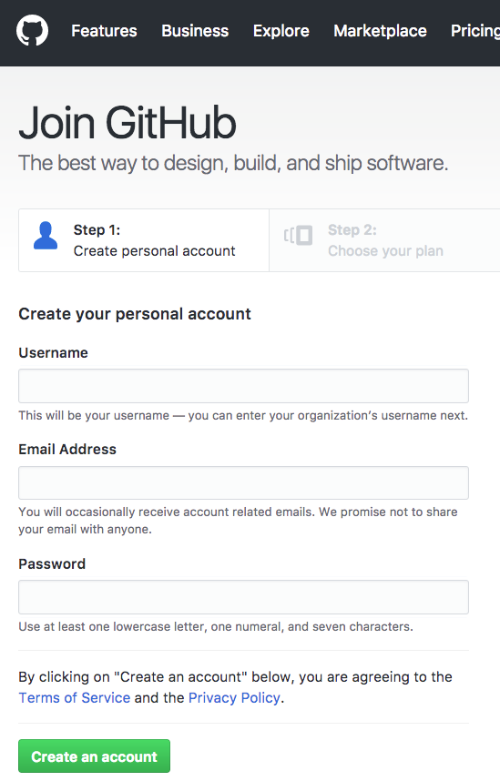
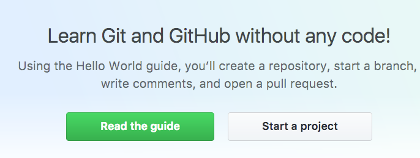
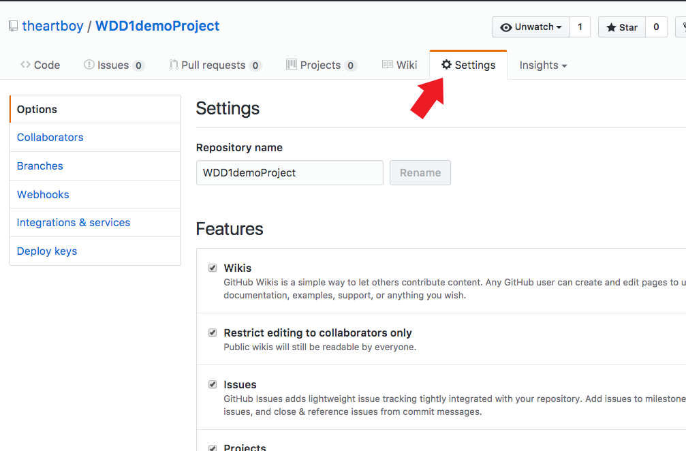
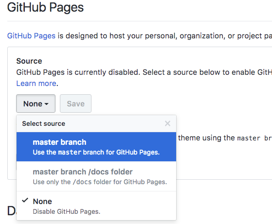
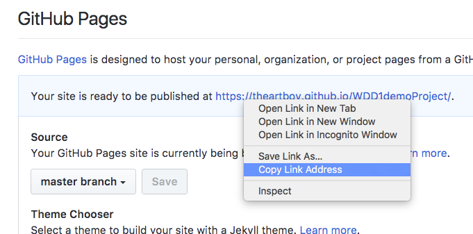
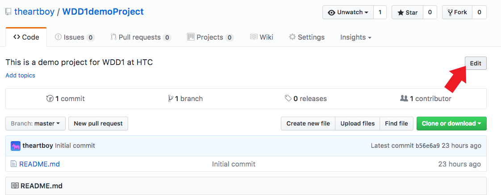
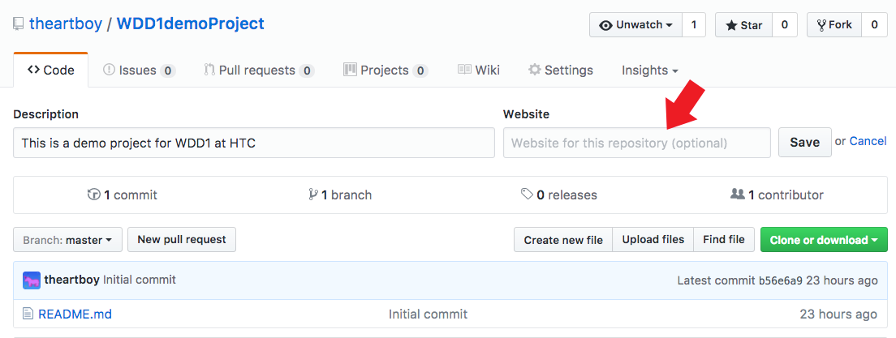

Now is the time to sign up for your github account. Most of the modern web world is using github to version control their software and use it for staging deployment. Please go to https://github.com/. It is free and requires no download. Our use will be online. Please write down your login information and keep it with you because you will need it EVERY class.
You are encouraged to read the guide. Each time you login, you will see this screen. You can start new projects here.
Creating a new repository is how you begin a new project. You need to provide:
Now you need to set the project setting by clicking on the top Settings tab
Scroll down to Github Pages. Click on the None button and select master branch. Then click the Save button.
Now scroll back down and right-click on the published URL and choose Copy Link Address.
Scroll back up and click on the Code tab. At the right of the screen you will see an Edit button. Click this button.
Paste the project page URL into the Website field and click the SAVE button.
Next you need to click on the green button Clone or download and click on the clipboard icon to copy the project path to the clipboard.